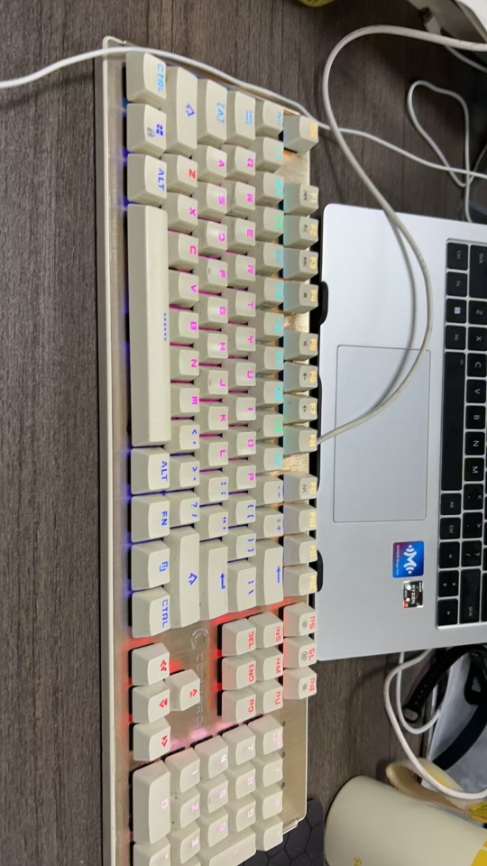

2024/10/14
-
Just as I said in my Introduction, I changed a lot. So what I want to talk is too much.
I always tried to find someone to pour out before.
However, in this era, everyone is busy. People used to focus on their own immediate matters.
I don't mean I am lack of true friends. Just we all don't have enough time to share everything.
I am get rid of the bad habit now. But I found a new habit on me in recent time.üòÇ
Forget it. I need to get up from computer. My waist start to hurt.
2024/10/15
-
Last night my teacher suggest me studying Machine_Learning and Computer_Vision from now on.
I feel excited but a little afraid at the same time.
I don't know if I can keep going.
I don't know if it's right to follow my interests to decide what I should study.üò∂‚Äçüå´Ô∏è
-
Nowadays extracurricular study has grabbed most attention of mine.
I wish I can balance learning in and out of class well.
| Time | Activity |
|---|---|
| Day | Study in class |
| Four hours in night | HTML/Microeconomic/Machine_Learning/English |
| All Other Times | Read |
| Run | |
| Sleep | |
| A little game time |
2024/10/16
-
Today I want to talk about material desire.
I found myself desiring many electronics such as shining keyboards, noise-canceling headphone, smart glasses and so on.
However, I can't spend too much money which comes from my parents as a student.
I have saw many schoolmates around me spend money recklessly.
They can be a mirror for me.
Yesterday I said I will begin studying machine-learning, but I found my computer without nvidia's GPU can hardly run the pytoch program.
SO I must save my pocket money in order to get a 3060 graphics card or higher configuration(I wish).
2024/10/17
-
I gradually found my interests.
Creation,freedom,beauty.Those are what I love.
Maybe it sounds abstract and foolish. But I feel powerful when I work with them.
Just like when I'm learning HTML to design my own web pages. I often do it all afternoon.
Because I can design my web freely with passion.
Interest is the best teacher.
-
Today I didn't do my homework again.üòî
Being occupied in excurricular learning.
I must finish my homework first start from tomorrow.üò°
And I found that consider too many things to do in a short time
will make your efficiency reduce sharply.
So I will focus on my web page nowadays.üòÜ
PS: share a song : 今天只做一件事
2024/10/18
-
I received the customized birthday gift from my best friend today.
-
The inspiration of this gift comes from <The Three Body<,a fantastic and world-famous science fiction.
In the story, a moribund man got an unexpected fortune.
And he used the money to buy a fixed star for the girl he loves.
I won't go into details what happened next.
But it already shows us its romance.
In the crystal ball of my gift is the constellation of the star in the story.
My friend and I both love the Three Body. Thus, I was so surprised to receive the gift.üòò
I felt one of the few blessings of life.
-
There is no obvious innovation in my webpages.
So I will study the form next step.
I want to create a comments section.
Please keep your expectation.üòé
2024/10/20
-
Well, self-discipline is not easy.
Yesterday, I take a break. Slept most of the day.üòÇüò™
I was going to get up early and finish my backlog.
However, I overestimate myself.üò≠
There is still homework waiting for me.
-
I have a preliminary understanding of the form today.
I found that to receive the statics form returns, we need a web server.
So I start to learn Flask now.
I hope I can deal this in few days.
2024/10/21
-
I kept learning flask today.
But I made less progress in it because I need to spend more time on my homework today.
Besides, I found it seems a little cumbersome to just use html5 to update my blog.
So I want to solve the problem that I can't update my blog directly on the webpage.
-
I want to save my memories, but I am too lazy to write diary everyday.
Human being is a collection of contradictions.
2024/10/22
-
I found that I have learned Flask before while I was viewing my python project folders.
But I totally forgot it.üò∞
I don't understanding the code anymore.üò£
I am so happy that I got a keyboard from my lab for free today.üòÄ

I found it when we were clean up the room.
Although it's dirty, it can continue to work and even glitter.
2024/10/23
-
"The more you know, the more you realize your ignorance".
I finally realize this saying exactly now.
When I struggled for my webpage form, I come into contact with Flask, php, JS.
And I choose Flask to solve my problem.
Then I started to learn basic templates, static file, database operation of Flask.
Oh, there are too many things I need to learn.
2024/10/26 üåß
-
I feel so tired this week that I don't have enough energy to update my blog.
Besides, my speed of learning form is becoming slower and slower.
I must set a goal now.
I will finish my comments section in the next week.